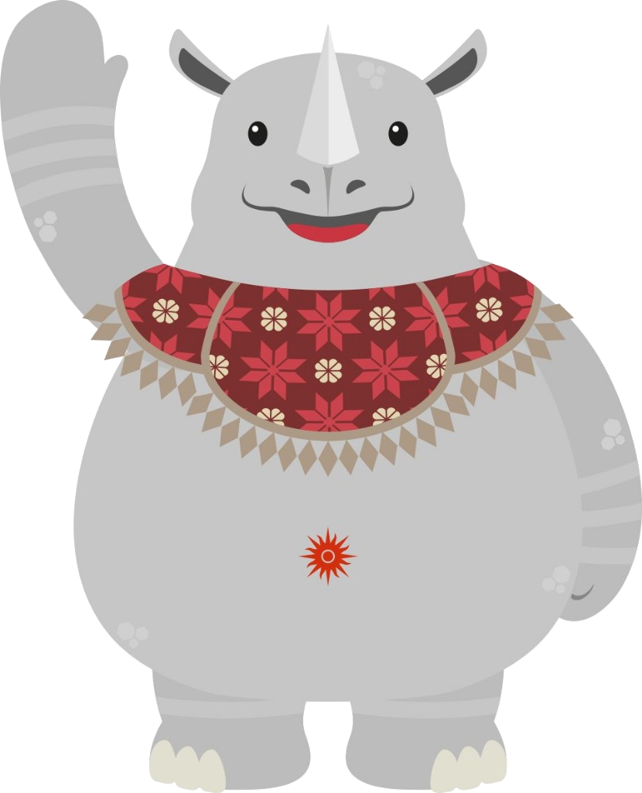
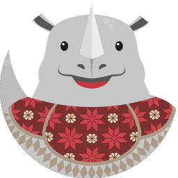

Platform pembelajaran budaya interaktif bersistem game pertama di Indonesia. Kumpulkan artefak legendaris, selesaikan misi kuis taktil, dan kembangkan karaktermu bersama Raga si Badak Penjelajah melintasi ribuan pulau.
38
Provinsi Terpetakan
500+
Artefak Budaya 3D
100%
Kajian Sumber Valid

Arsitektur
Rumah Gadang
Alat Musik
Talempong Pacik
Bukan sekadar daftar provinsi, setiap wilayah dirancang sebagai dunia petualangan dengan arsitektur khas, instrumen musik, mitologi, dan kearifan hidup yang berbeda.
Dirancang dengan dinamika micro-learning yang ringkas, seru, dan berbobot tanpa membuatmu jenuh.
Pilih pulau dan bab kebudayaan yang ingin kamu telusuri pada Peta Nusantara yang dinamis.
Resapi ringkasan cerita adat, filosofi leluhur, dan teknik karya tradisi yang terverifikasi.
Pecahkan teka-teki, kuis interaktif, dan mini-games fisik dengan umpan balik taktil seketika.
Raih permata zamrud, XP, peti harta karun, dan koleksi kartu artefak 3D di Culturepedia.
Puncaki Liga Mingguan, klaim gelar Maestro Adat, dan banggakan pencapaianmu ke media sosial.
Terinspirasi dari Badak Jawa (*Rhinoceros sondaicus*) yang berjiwa petualang, santun, dan penuh rasa ingin tahu. Raga mengenakan kain selempang batik bermotif bunga bintang dan berganti busana adat saat kamu membuka pulau-pulau baru!
Pilih Busana Tradisi Raga:
Setiap karya budaya dilengkapi sejarah, teknik pembuatan, makna simbolik, dan sumber lembaga kebudayaan resmi untuk menjamin integritas edukatif.
Arsitektur Tahan Gempa
Filosofi tenunan benang emas Itik Pulang Patang tentang kerukunan dan kepatuhan norma.
Pelajari ArtefakSeni Teater Tradisi

Bergabunglah dengan ribuan penjelajah muda. Mainkan kuisnya, klaim gelar kebanggaan adat, dan rayakan warisan leluhur Indonesia hari ini!
Didukung oleh Direktorat Pengembangan Budaya Digital • Kementerian Kebudayaan RI
Lanjutkan petualangan budayamu dan simpan progres belajarmu.